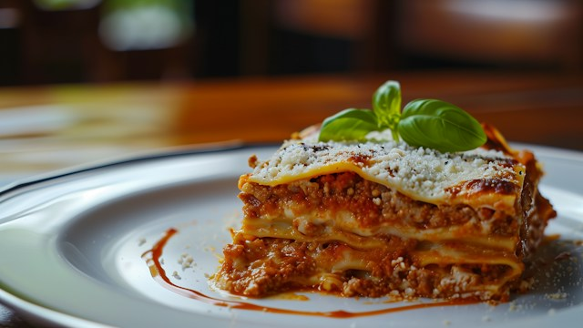

As the days grow colder, some hearty comfort food can warm your soul after coming home in the dark from a long day of work. I find that lasagna is one of the best dishes for this, as the tomatoes in its sauce pack a hefty dose of umami while the cheese and bechamel bring along both fat and salt to hit even more sweet spots in your taste profile.
The minced meat and noodle plates, at the same time, add just the right texture and chewiness, so that each bite presents its mixture of flavours anew. Add just the right spices and you will feel like sitting in Naples even when you're spending a winter night in Helsinki.